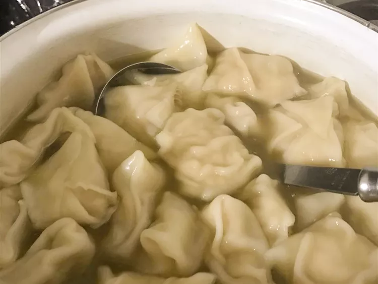

Chicken Wontons Recipe

Description
Chicken wontons are probably the second best dish in chai wok. Who doesn't love them?! Anyways here's a chicken wonton recipe for 4 that will take 1 hour to complete.
Ingredients
- 2 skinless, boneless chicken breast halves, minced
- 1 egg
- 1 green onion, minced
- 1 ½ tablespoons soy sauce
- 1 tablespoon Asian (toasted) sesame oil
- 1 tablespoon vegetable oil
- ¼ teaspoon salt
- 50 wonton wrappers
- 2 cups cold water
Steps
- Mix chicken, egg, green onion, soy sauce, sesame oil, vegetable oil, and salt in a large bowl until evenly combined.
- Scoop about 1 teaspoon chicken mixture and place into the center of a wonton wrapper. Moisten 2 adjacent edges of the wrapper with water and fold into a triangle. Connect the two lower points of the wrapper and moisten to seal and make a hat shape. Repeat with remaining chicken and wonton wrappers.
- Bring a large pot of water to boil. Stir wontons into boiling water. Add 1/2 cup cold water and allow water to return to a boil. Repeat boiling with another 1/2 cup cold water. Wontons are ready when chicken is no longer pink in the center, about 5 minutes. Drain.